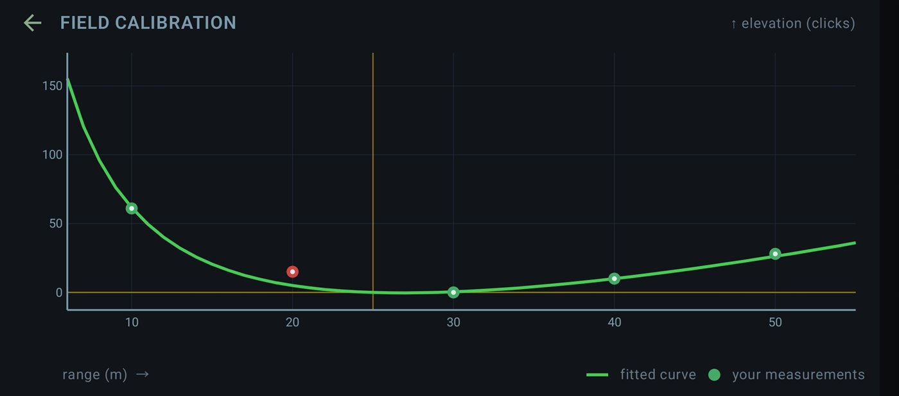
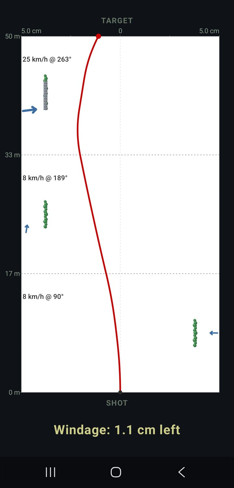

No black box. WindMaster runs its own time-stepped simulation of the pellet in flight — the same physics that drives every game shot and every table in the app.
Sin caja negra. WindMaster ejecuta su propia simulación por pasos de tiempo del balín en vuelo — la misma física que mueve cada disparo del juego y cada tabla de la app.
A pellet's ballistic coefficient (BC) is a single number for how well it holds velocity. The drag function is the shape of how air resistance changes with speed. WindMaster uses the GA curve, tuned for wasp-waisted diabolo pellets — its characteristic subsonic dip (a drag minimum around Mach 0.5–0.6) is exactly why the rifle-bullet G1 curve is wrong for airguns. Pellets live deep in the subsonic range, so only the low end of the curve is ever used. G1 is available too, for slugs.
El coeficiente balístico (BC) de un balín es un único número de cómo conserva la velocidad. La función de resistencia es la forma en que el rozamiento cambia con la velocidad. WindMaster usa la curva GA, ajustada a los diábolos de cintura de avispa — su característico valle subsónico (un mínimo de resistencia hacia Mach 0,5–0,6) es justo por lo que la curva G1 de bala de rifle no sirve para el aire comprimido. Los balines viven muy en subsónico, así que solo se usa la parte baja de la curva. G1 también está disponible, para slugs.
The pellet is advanced in tiny time steps. At each one the engine looks up drag at the current Mach, applies it with gravity and a Magnus term, and moves the pellet.
El balín avanza en pasos de tiempo diminutos. En cada uno el motor consulta la resistencia al Mach actual, la aplica con la gravedad y un término Magnus, y mueve el balín.
The barrel angle that crosses your line of sight at the zero range is found by bisection — not assumed — so scope height and zero distance are honoured precisely.
El ángulo de cañón que cruza tu línea de mira a la distancia de cero se halla por bisección — no se asume — así se respetan con precisión la altura de mira y la distancia de cero.
Checked against professional ballistic calculators: elevation and windage match to under 0.2 cm out to 200 m, and within 0.7% at 300 m. A unit test guards it from drifting.
Verificado contra calculadoras balísticas profesionales: elevación y deriva coinciden con menos de 0,2 cm hasta 200 m, y dentro del 0,7% a 300 m. Un test unitario evita que se desvíe.
For every range: drop, wind drift, time of flight and remaining velocity — turned into holdover in mil or MOA, or clicks on the turret.
Para cada distancia: caída, deriva del viento, tiempo de vuelo y velocidad remanente — convertidos en holdover en mil o MOA, o clics en la torreta.
Charts above are illustrative curves in realistic ranges; your exact figures come from your profile in the app.Los gráficos de arriba son curvas ilustrativas en rangos realistas; tus cifras exactas salen de tu perfil en la app.

Build a profile per rifle. Defaults shown are typical starting points for a sub-12 ft-lb .177.
Crea un perfil por rifle. Los valores por defecto son puntos de partida típicos para un .177 de menos de 12 ft-lb.
| Parameter | Typical value | Units offered |
|---|---|---|
| Muzzle velocity | 780 fps | m/s · fps |
| Ballistic coefficient (GA) | 0.021–0.024 lb/in² | GA · G1 |
| Pellet weight | 8.44 gr | gr · g |
| Pellet calibre / length | 4.50 / 6.0 mm | mm |
| Barrel twist & direction | 1:18" RH | in · RH/LH |
| Zero range | 25 m | m · yd |
| Scope height over bore | 76 mm | mm |
| Turret click value | 0.05 mrad | mrad · MOA |
| Temperature | 20 °C | °C · °F |
| Altitude | 0 m | m |
| Sea-level pressure | 1010 hPa | hPa · inHg |
| Humidity | 78 % | % |

Wind is a speed and a meteorological "from" direction. A pure crosswind pushes the pellet sideways; a head or tailwind subtly changes drop and time of flight. Wind Areas goes further: split the distance to the target into bands, each with its own wind, and the engine runs one continuous flight while swapping the wind as the pellet crosses each boundary — so velocity and spin carry across. You can even drop in obstacles: a solid wall gives dead air behind it, a tree lets part of the wind through.
El viento es una velocidad y una dirección meteorológica de "procedencia". Un viento cruzado puro empuja el balín de lado; un viento de frente o de cola cambia sutilmente la caída y el tiempo de vuelo. Áreas de viento va más allá: divide la distancia al blanco en tramos, cada uno con su viento, y el motor ejecuta un único vuelo continuo cambiando el viento cuando el balín cruza cada frontera — así la velocidad y el giro se conservan. Incluso puedes añadir obstáculos: un muro sólido deja aire muerto detrás, un árbol deja pasar parte del viento.
Uphill and downhill shots are solved by re-running the whole trajectory in the sight-line frame, splitting gravity into components along and across the slope. It's symmetric for up and down, and far more honest than simply multiplying range by the cosine of the angle — which is why the app can teach you the real correction for an angled HFT target.
Los tiros cuesta arriba y cuesta abajo se resuelven volviendo a calcular toda la trayectoria en el marco de la línea de mira, descomponiendo la gravedad en componentes a lo largo y a través de la pendiente. Es simétrico arriba y abajo, y mucho más honesto que multiplicar la distancia por el coseno del ángulo — por eso la app te enseña la corrección real para un blanco HFT inclinado.
Air density comes from temperature, altitude, sea-level pressure and humidity; the speed of sound shifts with temperature. Because Mach — and therefore drag — depends on both, a cold morning at altitude gives a different curve to a warm day at sea level. Spin drift and gyroscopic stability (Miller's rule) are modelled too, as fine refinements rather than headline effects.
La densidad del aire sale de la temperatura, la altitud, la presión a nivel del mar y la humedad; la velocidad del sonido cambia con la temperatura. Como el Mach — y por tanto la resistencia — depende de ambos, una mañana fría en altura da una curva distinta a un día cálido a nivel del mar. La deriva por giro y la estabilidad giroscópica (regla de Miller) también se modelan, como refinamientos finos más que como efectos protagonistas.
Second focal plane (SFP) reticles keep a fixed size while the image zooms, so a mark's real value scales with magnification — the app tracks each scope's calibration power so subtensions stay true. First focal plane (FFP) reticles scale with zoom, so subtensions are always correct. Both are handled, in mil and MOA.Las retículas de segundo plano focal (SFP) mantienen un tamaño fijo mientras la imagen hace zoom, así que el valor real de una marca escala con el aumento — la app sigue la potencia de calibración de cada visor para que las subtensiones sigan siendo ciertas. Las de primer plano focal (FFP) escalan con el zoom, así que las subtensiones siempre son correctas. Ambas se tratan, en mil y MOA.
Game physics are driven by the ballistic profile you configure — match it to your real equipment and the shot you learn on screen is the shot you'll take on the course.
La física del juego se basa en el perfil balístico que configuras — hazlo coincidir con tu equipo real y el disparo que aprendes en pantalla es el que harás en el recorrido.
Get it onGoogle Play